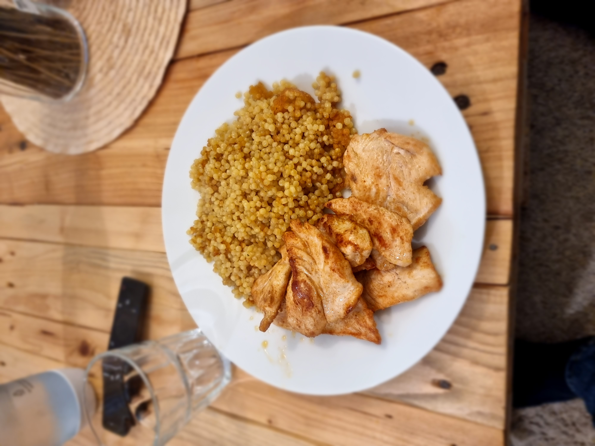

מערבבים בקערה את השמן זית, כפית שטוחה פפריקה אדומה מתוקה וחצי כפית מלח
אם רוצים אפשר להוסיף צ'ילי חריף
טובלים ומערבבים את העוף מכל הצדדים ברוטב
מחממים מחבת פסים
מטגנים את חזה העוף משני הצדדים
זמן הכנה: 20 דקות
זמן המתנה: ללא

רשימת מצרכים:
רבע כוס שמן זית
פפריקה אדומה מתוקה
מלח
צ'ילי חריף
“Cooking is like painting or writing a song. Just as there are only so many notes or colors, there are only so many flavors - it’s how you combine them that sets you apart.”